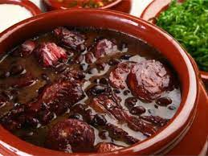

Voltar ao menu principal

Uma feijoada completa, digna de restaurante, mas feita em casa, com os pertences que você preferir! Na receita tem a nossa sugestão de combinação, mas no fim tem proporção para você escolher.
O passo a passo bem detalhado garante a feijoada saborosa e nada pesada.
Lista de ingredientes
- kg de feijão-preto>
- g de paio (4 unidades)
- cebolas
- >5 dentes de alho
- ¼ de xícara (chá) de azeite
- 3 folhas de louro
- colher (chá) de cominho em pó
Modo de preparo
- Coloque o feijão numa peneira e lave bem sob água corrente. Transfira os grãos para uma tigela grande e cubra com 2,5 litros de água –
se algum boiar, descarte. Cubra com um prato e deixe de molho por 30 minutos – se o feijão ficar muito tempo de molho pode perder a cor e desmanchar durante o longo cozimento da feijoada.
Enquanto isso, faça o pré-cozimento das carnes.
- Escorra a água das carnes dessalgadas e transfira para um caldeirão grande (ou panela) com capacidade para 11 litros.
Cubra as carnes com água e leve ao fogo alto – cerca de 4 litros bastam, a quantidade pode variar de acordo com o tamanho da panela, o importante é que as carnes devem ficar completamente imersas.
Deixe cozinhar por 10 minutos em fogo alto, contados após a fervura – o pré-cozimento elimina o excesso de gordura e sal das carnes.
- Enquanto isso, descasque e pique fino as cebolas e os dentes de alho. Com uma faca pequena, retire a pele dos paios. Escorra a água do feijão.
- Passados os 10 minutos, com uma escumadeira, transfira as carnes pré-cozidas para uma tigela grande e descarte a água do cozimento, com cuidado para não se queimar.
- Faltando 30 minutos para o fim do cozimento, com uma pinça, transfira os paios para a tábua e corte cada um em fatias de 1 cm,
na diagonal. Volte as fatias para a panela e deixe cozinhar até completar as 5 horas de cozimento total, ou até que as carnes estejam bem macias e o caldo da feijoada comece a engrossar.
Sirva com arroz, couve refogada, gomos de laranja e farinha de mandioca torrada.
Video da receita
Video